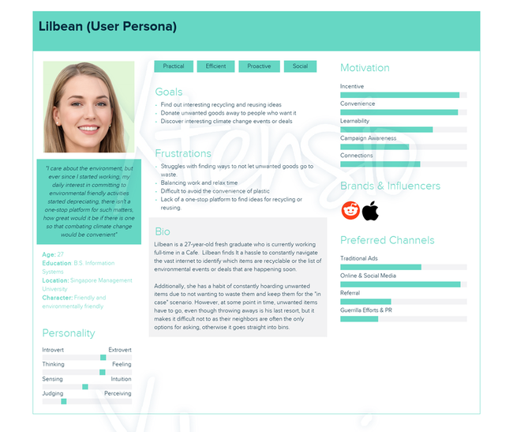
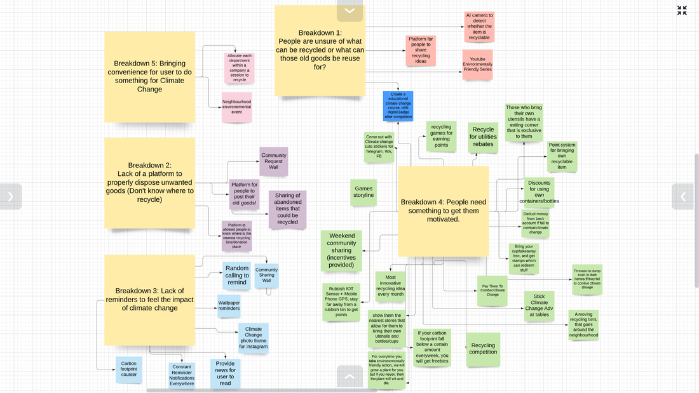
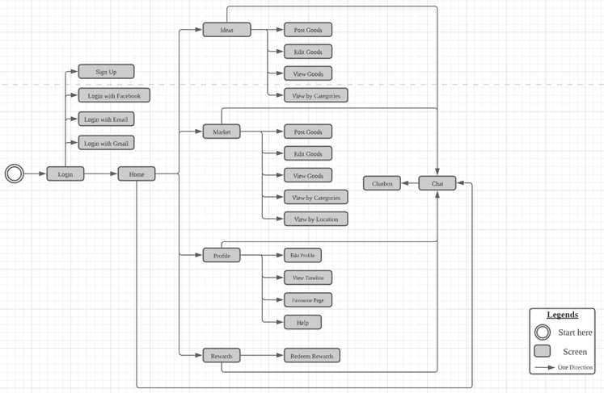
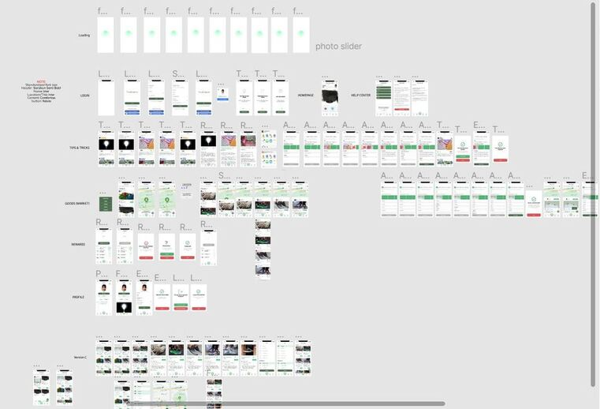

TruEnviro App
The app to combat Climate ChangeProblem Statement
Currently, there is no one-stop platform that assists Singapore residents in integrating environmentally friendly actions into their daily lifestyle.
Objective
A one-stop informative sharing platform to eliminate the convenient attitude and combat climate change. TruEnviro provides a sharing platform for people to share their recycling, reducing, or reusing ideas with the community, it also connects people via our platform where people can conveniently upload their unwanted goods for others to grab. This will serve to change user behavior, motivating them towards being environmentally friendly.
Timeline: 12 weeks
My Role: All rounded UX Methods:- User interview
- Sketching
- Prototyping
- Usability test
- Heuristic Analysis
- Lab Study
- Web Experiment
Softwares:
- Figma
- Adobe Photoshop
- Adobe Illustrator
- Adobe Premiere Pro

Tagline
"Your Next Application To Combat Climate Change"
Overall Goals
To change user behavior, motivating them towards being environmentally friendly.
User Research
Primary research:
According to survey results published by Mediacorp in 2019, young adults have the strongest concern regarding the issue of global warming and many of them indicated “agreed” or “strongly agreed” on the willingness to contribute their part to the environment (Elangovan, 2019). As I am working on an initiative to tackle the issue of climate change among housewives, working adults, and undergraduate students, I seek to understand their perspectives and opinions on climate change through primary and secondary research.
We interviewed these three main groups: housewife, working adult and undergraduates.
Through the statistics, we decided to conduct a deeper observation by conducting a secondary observation through a survey for the young adults to better understand our potential target audience.
Secondary research:
Through the statistics, I decided to conduct a deeper observation by conducting a secondary observation through a survey for young adults to better understand our potential target audience.
The survey results actually showed a similar trend with the online statistics that the majority of young adults are concerned for the environment. The surveyed audiences are already, in fact, making an improvement, 99% are already doing their part for the environment (e.g recycling minimally on a monthly basis).
Through the statistics and data collected, I have identified and drilled down their concerns into the different breakdowns in the following section.
Solutions
Persona

Ideation

Using the results I got from the User Surveys & Interviews I created User Personas to represent the common needs and wants of the audience. This is something I will then be able to keep referring to throughout the design phase.
Wireframes & Prototype
Low fidelity:

High fidelity:

Sitemap:

Based on all the feedback, amendments were made to the design taking into account accessibility, I therefore created a style guide so any future changes that may need to be made can follow these guidelines and keep consistency in the design.
Style Guide:

Overview of Prototype Screens

User Testing
I asked 2 testers who are closely aligned to our primary persona as they are both enviromentalist and possessed recycling habits. In addition, they are both iPhone users, which matches TruEnviro's mobile application's native platform. After interviewing them, we analysed their behaviors from the recorded videos and came up with a list of improvements for our user interface.

Limitations and Constraints
Due to Covid-19, we no longer conduct face to face interview. Nevertheless, it was a fresh experience to online interviewing doing for user testing. Thanks to Figma, interviewees are allowed to access to our prototype with the given link. We also managed to video record their use of the application throughout the testing.
Learnings & Future Plans
I learned that testing refining and testing again is of the utmost importance when working on a project like this, a number of times my thoughts were not what my users wanted so had to be redefined. I found it is important to take personal opinions out of the design process and make sure to get a fresh perspective.